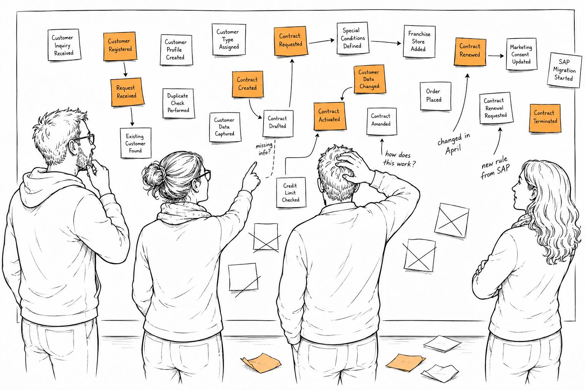

5 Why Understanding Decays

There is something strange about shared understanding.
Creating it is difficult, but at least you know what you have to do. You bring the right people together. You ask questions. You challenge assumptions. You slowly discover how the business actually works.
Keeping that understanding alive turns out to be much harder.
I have experienced this on almost every long-running project.
At some point, something clicks. People stop talking past each other. They start using the same words for the same concepts. A sentence that would have taken ten minutes to explain at the beginning of the project suddenly takes ten seconds because everybody already has the same picture in their heads.
The system itself has not become any simpler. The business rules are still complicated. The technical challenges are still there.
The difference is that the team has learned how to navigate that complexity together.
Once you experience this, software development becomes noticeably easier. Discussions become shorter. Decisions become faster. People spend less time explaining context and more time solving problems.
Unfortunately, this state never lasts forever.
At first I found that surprising. Looking back, it should have been obvious.
Software development is a learning process.
We build software iteratively because we know that we will discover things we couldn’t possibly know on day one. New business requirements appear. Existing processes change. Production reveals situations nobody anticipated. Sometimes we simply ask a better question than we asked a month earlier.
Every one of those discoveries changes our understanding of the system. And that is exactly where the real problem begins.
The new understanding appears naturally where the discovery happens. Maybe somebody asks a question during refinement. Maybe two developers discuss an edge case while implementing a feature. Maybe customer support reports an unexpected production issue. Maybe somebody writes down a decision in a ticket or explains it in a Slack conversation. The immediate problem gets solved. Everybody involved leaves with a better understanding than they had before.
But what happens to everything that described the system before that conversation?
Usually… nothing.
I’ve seen this countless times.
A developer starts implementing a user story and notices that something doesn’t quite add up. The acceptance criteria sound reasonable until you compare them with how the business actually operates. Somebody from the business joins the discussion. An edge case appears that nobody had considered before. The team talks it through, agrees on a solution and the implementation continues.
From the perspective of everyone involved, it was a productive conversation. The misunderstanding was resolved. The team learned something.
But if you open the original user story a week later, it often still says exactly what it said before the discussion started.
The shared understanding improved. The specification didn’t.
Production incidents often teach the same lesson.
A bug is reported. The team investigates. Eventually somebody discovers that the software behaved exactly as it was designed to behave, but the design itself was based on an incorrect assumption. Or perhaps a business rule was incomplete. Or a combination of data appeared that nobody believed was even possible.
Those moments are incredibly valuable because they reveal something the team genuinely didn’t understand before.
After the fix has been deployed, the team knows more about the system than it did yesterday.
But where does that new knowledge live? Quite often, it lives inside the ticket that has just been closed. Or inside the memory of the people who investigated the incident. Meanwhile, the specification that described the system before the discovery still describes yesterday’s understanding.
Over time, this happens again and again.
Every conversation improves the team’s understanding. Every discovery changes the mental model. But the artifacts that are supposed to represent that understanding gradually drift away from reality.
Looking back, I think this explains why the discussion around documentation has always felt slightly misleading to me. People often asked whether documentation was worth writing at all.
I don’t think that was ever the interesting question. Of course teams should capture knowledge. The problem was never documentation itself. The problem was that documentation had no natural place inside the team’s learning process. A document can be perfectly accurate on the day it is written. It may represent the best understanding the team has ever had.
But software doesn’t stand still. The business changes. The software changes. And, most importantly, the team’s understanding changes.
The document is somehow expected to keep up with all of that, even though nothing in the team’s daily work naturally brings it back into the conversation. Without realizing it, the document slowly turns into a historical record. It tells us what we believed at one point in time rather than what we understand today.
That realization became even more interesting when I started working with Event Storming. One of the reasons Event Storming felt so refreshing was that it didn’t begin with documentation. It began with conversation. Developers, domain experts and business people stood in front of the same wall and explored the business together. Questions immediately changed the model. A new sticky note appeared. Somebody challenged an assumption. The understanding evolved, and the model evolved with it. For the duration of the workshop, the model was alive because it participated in the conversation.
The interesting thing is that experienced Event Storming practitioners were well aware that this state wouldn’t last. In fact, the advice I heard most often was not to treat the workshop artifact as documentation that needed to stay up to date forever. The workshop had already achieved its purpose. Shared understanding had emerged. If the understanding changed significantly a few months later, the recommendation was simple: run another workshop.
At the time, that made perfect sense to me. After all, the sticky notes were never the real outcome. The conversation was. But over the years, I couldn’t shake one question.
Back on the SAP project, our monitoring application had shown me that a representation didn’t have to become obsolete immediately. It could stay connected to reality. It became part of the team’s feedback loop. It didn’t replace conversations, but it gave those conversations a place to continue.
I started wondering whether collaborative models could do the same.
Could a model remain useful after the workshop?
Could the people who created the shared understanding continue working with it instead of starting over every few months?
Or, put differently:
Could the model itself become part of the ongoing conversation?